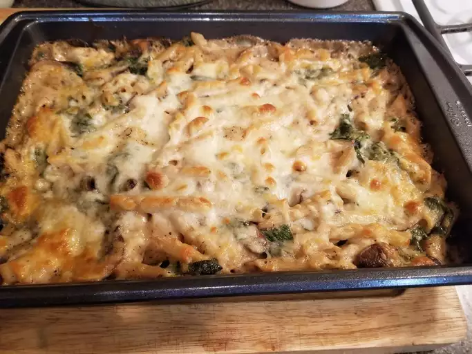

Portobello Penne Pasta Casserole

Inspired by the pizza at Bar Del Corso, this Pizza Margherita features tomato sauce, mozzarella, and basil, with just a hint of sea salt.
Ingredients
- 3 ½ cups all-purpose flour
- 1 teaspoon salt
- 1 cup water
- 1 (.25 ounce) package active dry yeast
- 1 pinch white sugar
- ¼ cup flour for dusting
- 2 cups pizza sauce
- 20 slices fresh mozzarella cheese
- 20 leaves fresh basil
- olive oil
- sea salt to taste
Steps
- Preheat oven to 350 degrees F (175 degrees C). Lightly grease a 9x13 inch baking dish.
- Bring a large pot of lightly salted water to a boil. Place pasta in the pot, cook for 8 to 10 minutes, until al dente, and drain.
- Heat the oil in a saucepan over medium heat. Stir in the mushrooms, cook 1 minute, and set aside. Melt margarine in the saucepan. Mix in flour, garlic, and basil. Gradually mix in milk until thickened. Stir in 1 cup cheese until melted. Remove saucepan from heat, and mix in cooked pasta, mushrooms, spinach, and soy sauce. Transfer to the prepared baking dish, and top with remaining cheese.
- Bake 20 minutes in the preheated oven, until bubbly and lightly brown.
Home Page